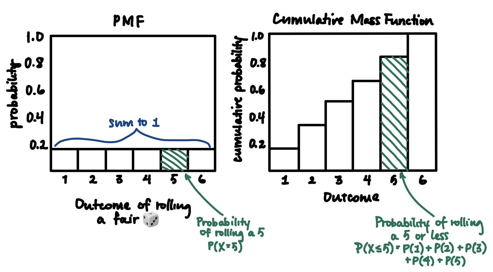
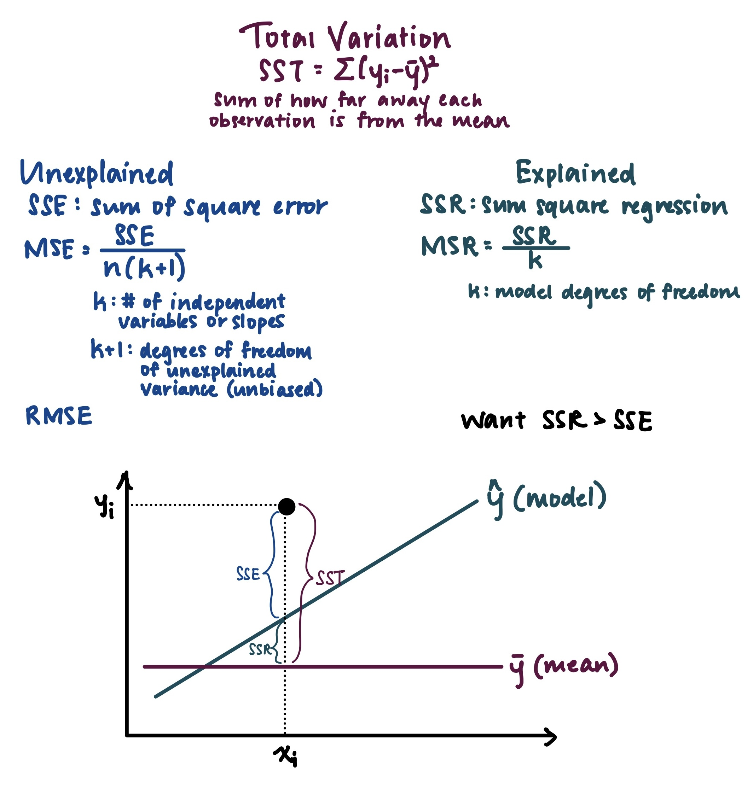

Model evaluation metric. \( \text{Accuracy} = \frac{\text{# of correct predictions}}{\text{total #
of predictions}} \)
The probability of event A or event B happening is calculated as \( P(A \cup B) = P(A) + P(B) - P(A \cap B) \).
Bayes' theorem provides an iterative framework for
incorporating prior probabilities by updating them with new evidence. This process allows for a more
refined estimation of posterior probabilities, the probability given prior beliefs and
observed data.
For discrete variables. \( k \) successes in \( n \)
trials.
\[ P(X = k) = \binom{n}{k} p^k (1 - p)^{n - k} \] where \( \mu = np \) and \( \sigma^2 = np(1-p) \)
As the sample size (n) increases,
the sample means will approach a normal distribution regardless of the distribution of the original
dataset.
R2 measures how well the independent variables explain the variability in the dependent
variable. If R2=1, the model perfectly predicts the dependent variable. If
R2=0, the model does not explain any variability in the dependent variable. R2
= SSR (explained variance) / SST (total variance)
The probability of event A happening given event B, denoted as P(A|B). It is calculated as the
probability of both A and B happening ( \( P(A ∩ B) \) ) divided by the probability of B happening (
\( P(B) \) ).
\[ P(A|B) = \frac{P(A ∩ B)}{P(B)} \] Note that the probability of two events hapeening at the same
time (P(A ∩ B)) cannot be greater than either event happening by itself (\( P(A) or P(B) \) ).
The % of the time (confidence) that the
estimated parameter would cover the true value of the parameter The confidence level is one minus
alpha (the significance level).
The confidence interval is related to the sample size; less samples makes confidence interval wider.
1. Define a problem statement
2. Set the null hypothesis (status quo) and the alternative hypothesis (what you're testing to
be true)
3. Decide on a significance level (e.g., α = 5%)
4. Conduct the statistical test
5. Calculate the p-value and confidence interval
6. Make a conclusion on whether to reject or accept the null hypothesis. If the p-value < α,
then reject the null hypothesis (accept the alternative hypothesis)
A measure of the shape of the curve. A perfectly normal
distribution is mesokurtic, where K = 0. If the peak is tall and sharp with flat tails, the
distribution is leptokurtic and K > 0; there is less variability in the distribution. If the peak is
flattened with tails widely dispersed, the distribution is platykurtic and K < 0.
Evaluation metric for regression that measures the average
absolute difference between the actual and predicted values. Lower MAE means better model
performance.
\( MAE = \frac{1}{n} \sum_{i=1}^{n} |y_i - \hat{y}_i| \)
Evaluation metric for regression that measures the average of the squared differences between actual
and predicted values. Lower MSE means better model performance. The MSE represents unexplained
variance, the portion of variability in the dependent variable that is not explained by the model's
independent variables.
\[ MSE = \frac{1}{n} \sum_{i=1}^{n} (y_i - \hat{y}_i)^2 \]
The p-value measures the evidence against the null
hypothesis; smaller p-values indicate stronger evidence opposing the null hypothesis.
Given the null hypothesis is true, the p-value quantifies the extremeness in the data, indicating
that the observed differences between the control
(null)
and treatment (alternative) groups would very unlikely be due to chance (reject the null
hypothesis). In other words, the p-value is the probability of observing the results given the null
hypothesis is true. The level of
statistical significance is determined by alpha (the significance level).
A function that describes the probability of a
random continous variable being equal to some value.
A function that describes the
probability of a random discrete variable being equal to some value [Source].

A method of selecting a subset of data from a larger dataset
where each data point has an equal probability of being selected.
A technique for quantifying the relationship
between
independent variables (features or predictors) and a dependent variable (target or outcome)
to make
predictions and illuminate the influence of the independent variables on the target.
Multiple Regression: Regression with two or more independent variables to predict one
dependent variable Linear Regression: Regression where the relationship between the independent and dependent
variables are fitted with a linear equation Polynominal Regression: Regression where the relationship between the independent and
dependent variables are fitted with a polynomial equation such as quadratic or cubic Ridge and Lasso Regression: Regularization technique to handle collinearity (high correlation
among features) to prevent overfitting. It introduces additional information to penalize extreme
parameter (weight) values
The square root of MSE. This metric helps with:
Interpretability: Because RMSE is expressed in the same unit as the dependent variable, it is easier
to interpret and more relatable to the original scale of the data.
Outlier Sensitivity: RMSE is more sensitive to outliers than MSE, as larger errors contribute more
significantly due to the squared and square root operations.
Direct Comparison: RMSE offers a direct comparison to the standard deviation of the target. If the
RMSE is close to the standard deviation (the inherent variability in the original data), then it
indicates that the model's predictions are capturing a similar level of variability on average as
the observed data.
Balanced Assessment: By taking the square root, RMSE balances the impact of extreme errors, offering
a more well-rounded evaluation of prediction accuracy in regression models.
A normal distribution where the mean is equal to the
mean of the population and the standard deviation is the population's standard deviation divided by
the square root of the sample size.
A measure of symmetry of a distribution. A
perfectly symmetrical distribution has a skewness coefficient of 0 (the mean, median, and mode are
equal). \( \text{skewness} = \frac{(\text{mean} - \text{median})}{\text{std}} \)
Positive skewness:
Mode < Median < Mean.
The tail is pulled to the right (positive direction).
There is more pileup of data on the left.
Negative skewness:
Mean < Median < Mode.
The tail is pulled to the left (negative direction).
There is more pileup of data on the right.
The probability of incorrectly rejecting the
null hypothesis (Type I error, false positive). Denoted by alpha (α). (Also see definition
for confidence interval).
Note that if you decrease the significance level, you will decrease the number of false
positives (type I errors). However, the tradeoff is that you will increase the number of false
negatives (type II errors).
A method of selecting a subset of data from a larger dataset
where the population is split into different strata according to key characteristics before random
sampling is performed on each individual stratum. This is beneficial if the strata have a high
degree of variation.
A method of selecting a subset of data from a larger
dataset
where a starting point is first chosen at random, and then every kth item is selected for
the sample. Typically, systematic sampling is more efficient than random sampling.
The sum of the squared differences between each observation
and the mean of the dependent variable (ȳ).

\( \text{z-score} = \frac{X - \mu}{ \sigma } \). Indicates the number of standard
deviations X is away from the mean (μ) for a distribution.